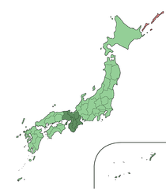

What is Kansai-ben?
Simply, Kansai-ben is an umbrella term for the related Japanese dialects that are spoken in Kansai--"Kansai" is the name of the region and "ben" means dialect. These dialects share many traits in their conjugation and intonation, but also have differences; this site tries to cover the common parts of Kansai-ben. Although you should be able to get information about the major topics in Kansai-ben from this site, it should be noted that this site does not cover all of the cases and dialects. To get an idea of some of the variety, you can hear how different people speak with variation in their age, gender, and region, on the "real" conversation pages.
Where exactly is Kansai?

Kansai, also known as Kinki, is located in south-central region of the main island of Honshu, and includes the prefectures of Osaka, Hyogo, Kyoto, Shiga, Nara, and Wakayama. However, depending on who you ask, some neighboring prefectures (such as Mie) may also be included.
The population of Kansai is about 16% of the population of Japan, and includes the major cities of Osaka, Kobe, and Kyoto. It is the largest region after Kanto (Tokyo and its surrounding prefectures). Since the old capitals--Kyoto and Nara--were in Kansai, it has many historic sites such as temples, shrines, and castles. There are many cultural differences between Kansai and Kanto, and some of these cultural matters are reflected in the way that people speak. For more information about Kansai and Kansai culture outside of the scope of this site, please see the Kansai related links page.
Who speaks standard Japanese and who speaks Kansai-ben?
When Japanese is taught it is standard Japanese (hyoujungo). In reality, however, the people of Japan speak very differently depending on their region. Standard Japanese was established in 19th century based on the Tokyo dialect (then the capital) and was adopted by the government as the national language until the end of World War II. Although governmental enforcement stopped after the war, standard Japanese is still used as the representative language in situations such as education and national broadcasting.
Given this, regional dialects have been fading and may be perceived as being old-fashioned. However, they are still heavily used daily all over Japan, especially in casual conversations and conversations with people who are from the same area. Most people can switch between standard Japanese and their dialect depending on the situation. However, people in Kansai tend to use Kansai-ben in all situations.
Kansai-ben is considered to be a major dialect because of the number of speakers and its historical and cultural background. Since a significant part of Japanese media, especially entertainment and comedy, includes this dialect, Kansai-ben has become widely known in Japan. Kansai-ben is significant enough that sometimes it can even affect standard Japanese. Moreover, some Japanese may even explicitly use Kansai-ben to identify themselves with the image of Kansai.
Even within Kansai, there can be a lot of diversity in dialect depending on gender and age. For example, young people may use a "neo-dialect," which is a hybrid of standard Japanese and Kansai-ben. This site tries to cover some of that diversity. When you read and listen to the examples, please pay attention to the speaker's background, such as gender and age.
When to use Kansai-ben?
Although this site introduces a lot of Kansai-ben grammar and vocabulary, it should be noted that most people in Kansai tend to speak something more similar to standard Japanese when in formal settings such as work meetings. If you speak in a heavy Kansai-ben in a formal situation, people may feel that you are being overly friendly or rude.
That being said, in Kansai, it is hard to go too horribly wrong using and trying to use Kansai-ben--the rules of formality are a little more relaxed in the dialect and the people of Kansai will appreciate and enjoy your effort. On the other hand, it should be noted that Kansai-ben could sound too casual, and possibly rude, outside of Kansai.
Good luck and hopefully you'll enjoy some Kansai-benefits.